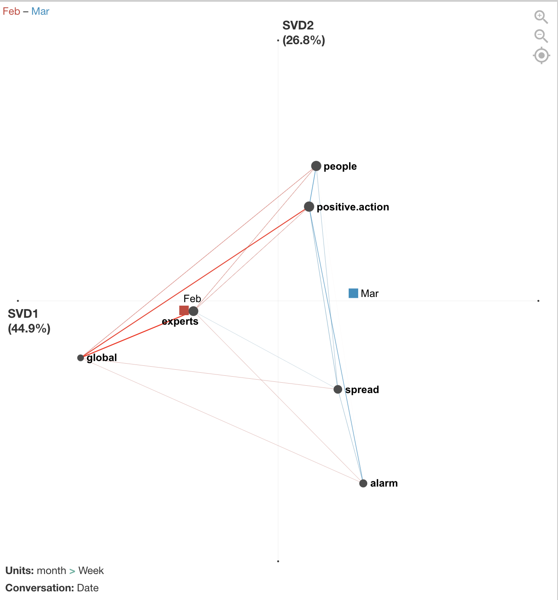

Dataset6: News media and government/international organization tweets (by Jingyuan Yu)
I used a subset of the dataset with U.S. CDC tweets from Feb and March 2020 and coded tweets for 6 different codes:
| Code | Definition | Sample keywords |
|---|---|---|
| People | Referring to different populations of people affected by covid-19 | People, family, community, children, adults |
| Positive Action | Referring to an action that people can take to cope with or stay safe from covid-19 | Support, wash, avoid, learn, help |
| Spread | Referring to the spread of the virus among people | Spread, outbreak |
| Alarm | Using language that conveys an emergency, risk, or sense of alarm | Emergency, risk, death, complication, burden |
| Global | Referring to other countries or global effects of covid-19 beyond the U.S. | China, travel, global |
| Experts | Referring to experts or professionals related to epidemiology | Doctors, experts, cdc, recommend |
I used ENA to visualize themes in the CDC’s tweets and created a Month, Week, and Date variable. Stanzas (segmentations for how co-occurrences are counted) were by date. Units (individual networks) were accumulated by week and then grouped into red and blue networks by month.
The figure below compares the average networks for each month and shows the average centroids. Although the differences are not significant and the effect is not very large, there are differences between February and March in terms of how the CDC tweets were conveying information to the public. In February, tweets focused more on how people could follow expert recommendations regarding the global effects of COVID-19. In March, tweets focused more on the alarming and quick spread of the virus and what positive actions people could take to cope with and reduce spread of COVID-19.
Below are two examples of February and March tweets that match with the interpretation of the networks above.
| Example of Feb 21 (week 3) Tweet | There are now 2 categories of #COVID19 cases in the US: 1) Cases detected through the domestic public health systems, and 2) cases among people who were repatriated via @StateDept flights from Wuhan (China) & from the Diamond Princess cruise ship (Japan). https://t.co/1ifchVQ9jm. |
| Example of March 17 (week 7) Tweet | Older adults appear to be twice as likely to have serious #COVID19 illness. Take everyday precautions to reduce your risk of exposure: Avoid close contact with people who are sick Wash your hands often Avoid touching your face, nose, & eyes https://t.co/K8q30LYLiE https://t.co/csEUNDYaNf |
The figure below breaks out the networks by each week and is a centroid representation. February includes weeks 1 - 4 and March includes weeks 5 - 9. This visualization shows more detailed trajectories on how the CDC tweets’ focus changed week by week. For example, in week 9 at the end of March, those tweets look more similar to the February tweets that had a global/travel focus. This was because many additional travel advisories went into effect during this week by the U.S. government.

Additional possible analyses include exploring metadata from this dataset such as retweets, favorited/popular tweets, or media included in tweets. Also, April tweets were not included in this analysis and are now available for download and could be added. In addition, this tweet data could be correlated with metadata from other sources such as general tweets with #Covid19 hashtag, containment and mitigation measures, number of infections, etc.
All csv files and R scripts can be accessed here.